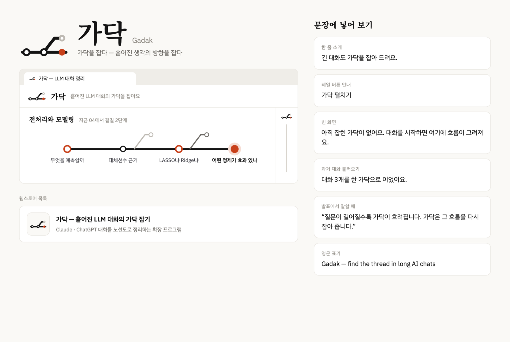
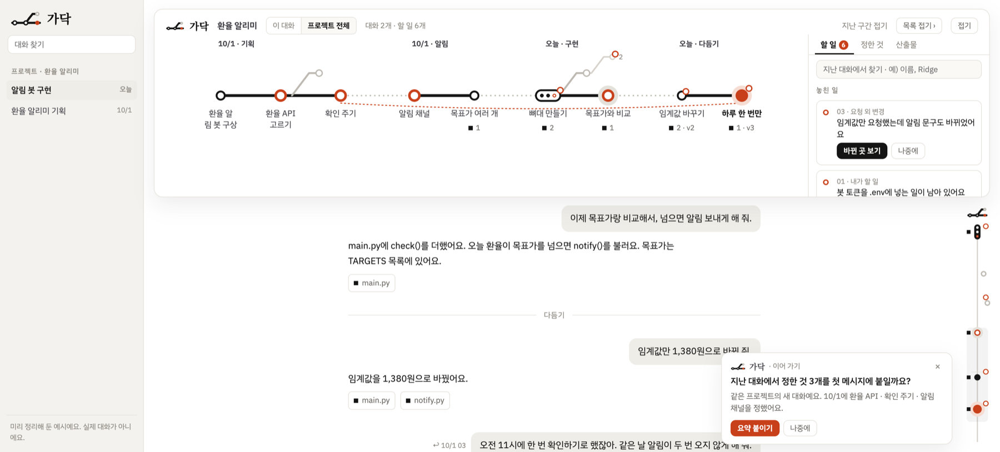
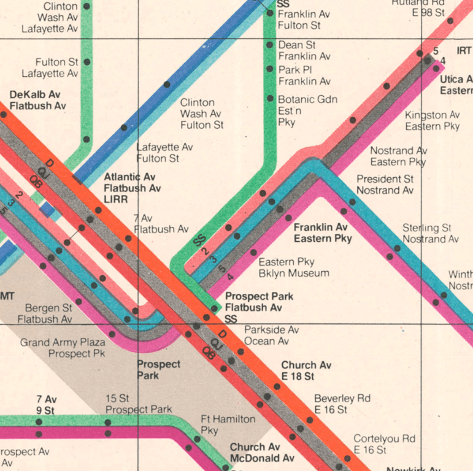
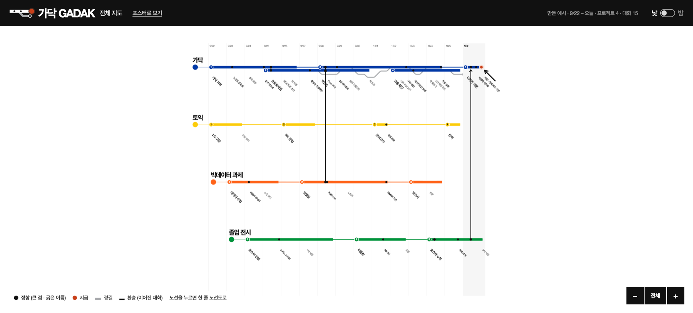
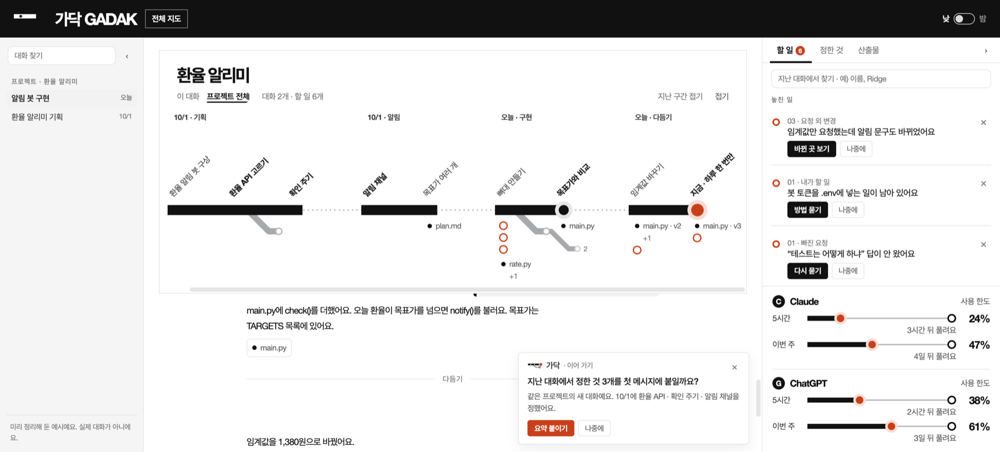
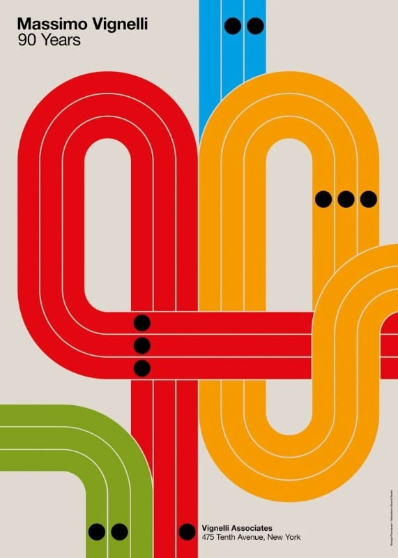
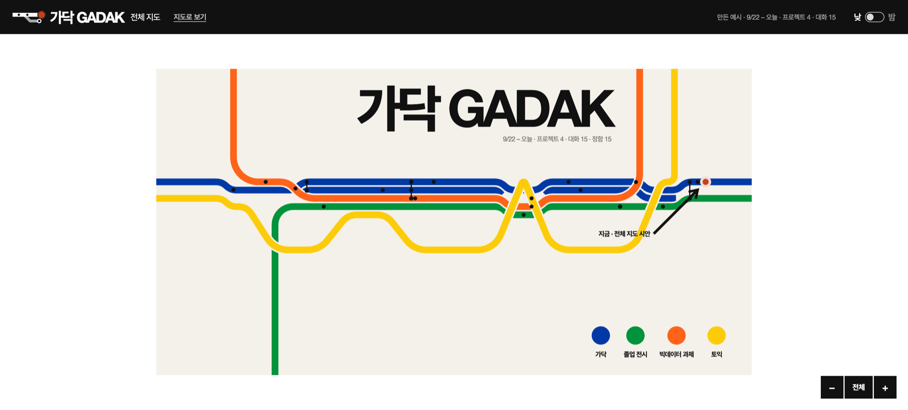

모든 턴은 값싼 분류 1번. 조건이 걸린 15%만 스스로 도구를 골라요.
보내는 것은 사람이 승인한 두 종류뿐 (18번)
어느 것이 최신본인지 ‘자주’ 헷갈림
요청 외 변경을 ‘자주’ 겪음 7명지난 대화를 못 찾아 새로 물음
프로젝트별로 나눠 쓰는 사람 15명‘앞 내용을 끌고 옴’은 겪은 적 없음
17명 중 가장 덜 아픈 문제개인정보 걱정 (5점 만점)
4점 이상 7명| 업무 | 잰 것 · 전 → 후로 바뀐 일 | 전 | 후 | 줄어든 만큼 | |
|---|---|---|---|---|---|
| AClaude Code로 코드 고치기 | 요청 외 변경을 다 찾는 시간바뀐 파일 전체를 훑음 → 짚어 준 곳만 검증 | __ | __ | __ | 분 |
| 놓친 요청 외 변경사람 눈으로 가림 → 가닥이 바뀐 줄과 대조 | __ | __ | __ | 건 | |
| 되돌리기까지 보낸 메시지원래를 떠올려 직접 씀 → ‘원래대로 요청’ 한 번 | __ | __ | __ | 개 | |
| B여러 날 보고서 · 발표 자료 | 지난 결정을 찾는 시간스크롤 · “아까 그거 뭐였지?” → 역을 누름 | __ | __ | __ | 분 |
| 최신본을 찾는 시간폴더와 대화를 뒤짐 → ‘산출물’ 칸 | __ | __ | __ | 분 | |
| 새 대화로 옮길 요약 만들기맥락을 직접 요약 → ‘이어 가기’ 요약 | __ | __ | __ | 분 | |
| 같은 것을 다시 묻는 횟수지난 대화를 못 찾아 새로 물음 → ‘정한 것’ 찾기 | __ | __ | __ | 번 |
28쪽 · 인적 오류가 생기기 쉬운 데이터 집약적 작업
입구: Claude Code hook28쪽 · 반복적이고 시간이 많이 소요되는 작업
입구: Claude · ChatGPT 웹, 내보낸 대화
후보는 갈래 · 갈피 · 가닥. “가닥을 잡다”에서 왔어요.
첫 심볼은 둥근 선에 곁길이 위로 빠지는 모양, 바탕은 따뜻한 크림색.

대화 위에 가로 노선도, 대화 옆에 세로 미니 노선(레일).
스크롤하면 레일의 ‘보는 중’이 따라와요.

→
전체 지도 · 한 줄 노선도 · 환승하기가 생기고, 화면마다 다르던 그림을 한 문법으로.
위의 노선도와 옆의 레일이 같은 것을 두 번 그리고 있었어요.
하나만 남기니 대화 칸이 넓어졌어요.

크림을 빼고 흰 종이, 그림자 · 흐림 제거.
글꼴은 Helvetica + Pretendard, 카드도 굵은 막대 · 45° 이름 · 아래 곁길.

→
비녤리 포스터처럼 굵은 단색 선 · 흰 틈 · 큰 제목.
같은 대화를 감상하는 한 장으로.
90일치 대화 35개(408턴)를 넣자 노선이 엉켜 읽히지 않았어요.
전체 지도는 최근 30일, 10/11부터 7 · 15 · 30일을 골라요.
심볼만 옛 문법(둥근 선 · 위로 곁길)이었어요.
굵은 본선 · 아래 45° 곁길 · 종점 · 지금, 움직임은 ‘달리기’.